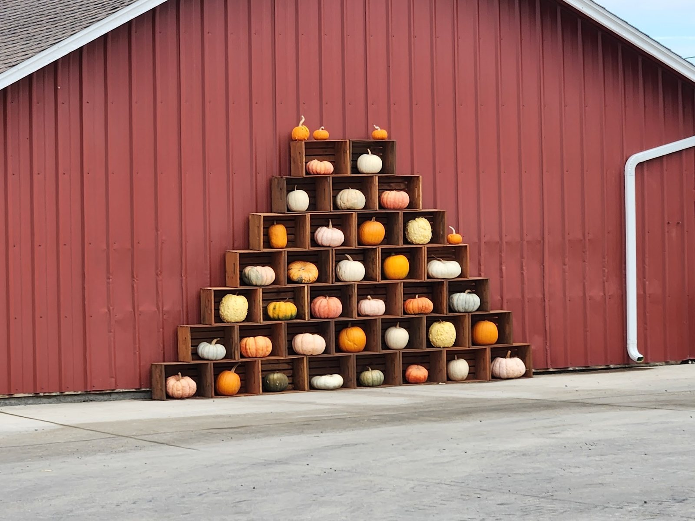

The farm
Run by the Williams family
A working farm on SE 464th that opens its fields to the rest of Enumclaw every fall.
The pumpkins are grown here. The maze is cut into their own corn. The slides, the fire ring and the big inflatable pumpkin go up for the season and come down again when the last pumpkin leaves.
Their name is on the sign at the gate, on the bench by the fire and on the photo board in the grass — and every one of those signs was painted by hand.